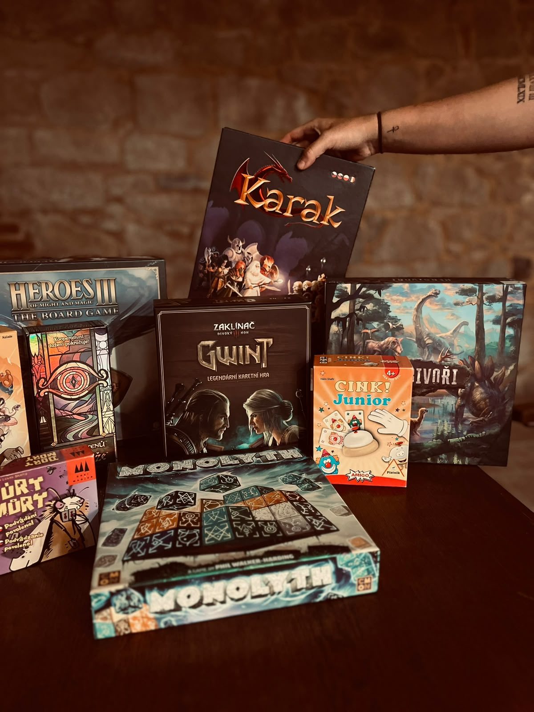
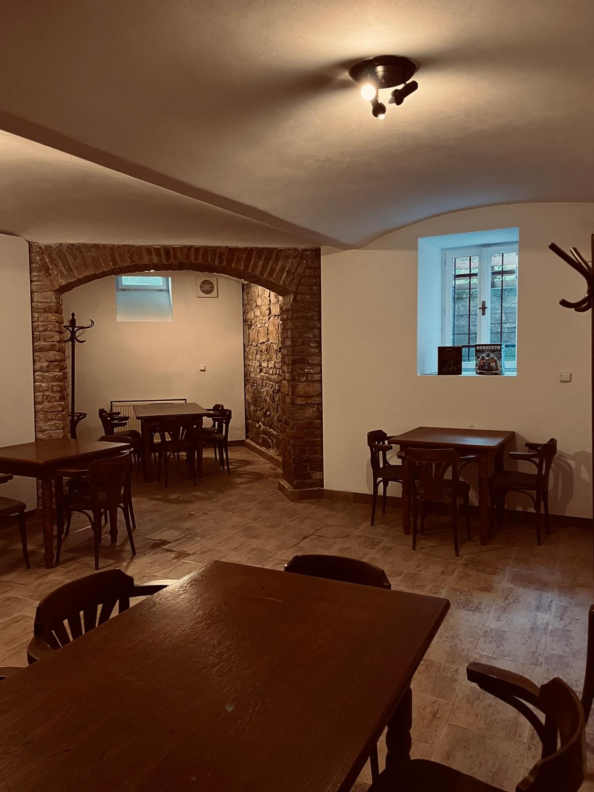
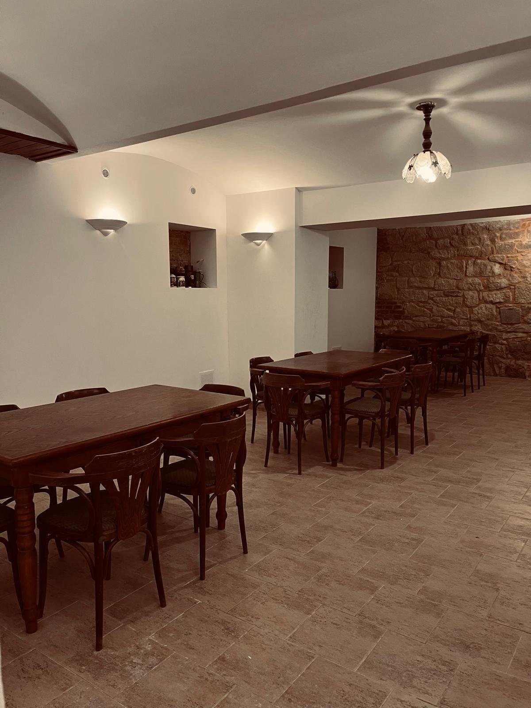

Novinky z krčmy
Aktuality
Novinky z krčmy
Tutoriál splněn
V pátek 16. 10. 2026 jsme měli možnost uspořádat v naší hospodě menší cvičný test. Pozvaní hosté si mohli prohlédnout naše prostory, zahrát si deskové hry a dát si dobrý drink. My jsme si zase vyzkoušeli provozní režim a doladili jeho nedostatky.
Rádi bychom poděkovali všem, kteří přijali naše pozvání, pomohli nám vše vyzkoušet a podělili se o své dojmy z návštěvy.
Test se z našeho pohledu velmi vydařil. Díky zpětné vazbě hostů můžeme doladit poslední detaily a brzy uvést naši hospodu do oficiálního provozu!
Nechceš u toho chybět? Sleduj naše sociální sítě (Instagram, TikTok a Facebook), kde budeme brzy sdílet další informace!
Náš příběh
Naplňte korbely a rozhoďte kostky!
Náš podnik Kostky a Korbely dokončuje vše potřebné a připravuje se na otevření veřejnost! A možná Vás zajímá, jak vůbec tento náš nápad vznikl?
Už se Vám někdy stalo, že jste se chtěli s partou přátel sejít, zahrát si deskové hry a u toho si dát něco dobrého, jenže pak Vám došlo, že vlastně nevíte kde? V hospodě Vás všichni soudí pohledem a do kaváren se to také nehodí. Když už nějaké prostory otevřené hráčům deskových her byly, tak ale otevírací doba byla velmi omezená a nebo kapacita ihned zaplněná. To přesně se stalo nespočetněkrát i nám, a proto jsme se rozhodli to změnit!
Naším cílem bylo vytvořit místo pro milovníky deskových her, kde se mohou sejít a poklidně si zahrát. Přinést si vlastní hru, připravené D&D nebo si zapůjčit některou z her, které pro Vás máme k dispozici. Přátelské místo, kde si můžete sednout a ať už hrajete propracovanou strategii nebo jen Výbušná koťátka na odreagování, tak Vás nikdo nebude soudit. Protože hlavní je se u hraní vždy dobře bavit! A když se k tomu přidá ještě dobré čepované pivo, tak je to o to větší radost.
Kostky a Korbely totiž nejsou jen obyčejná hospoda, ale místo, kde deskové hry spojují lidi!



Informace o webu
Vítejte na webu Kostky a Korbely
Co na webu najdete
Web slouží jako místo, kde najdete informace o naší připravované herní krčmě. Postupně sem budeme doplňovat aktuality a informace o hrách. Seznam dostupných deskových her právě připravujeme na stránce Deskové hry.
Sledujte novinky
Novinky z příprav a další informace najdete také na našich sociálních sítích:
Kde nás najdete
Kostky a Korbely najdete na adrese Skrétova 23, Plzeň. Odkaz otevře toto místo v Google Maps.
Připravujeme otevření
Hospoda zatím není otevřená. Na jejím otevření pracujeme; konkrétní termín zveřejníme, až bude potvrzený. Sledujte web a naše sociální sítě, kde budeme sdílet aktuální informace.